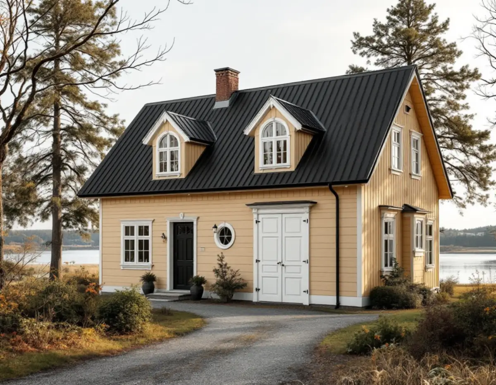
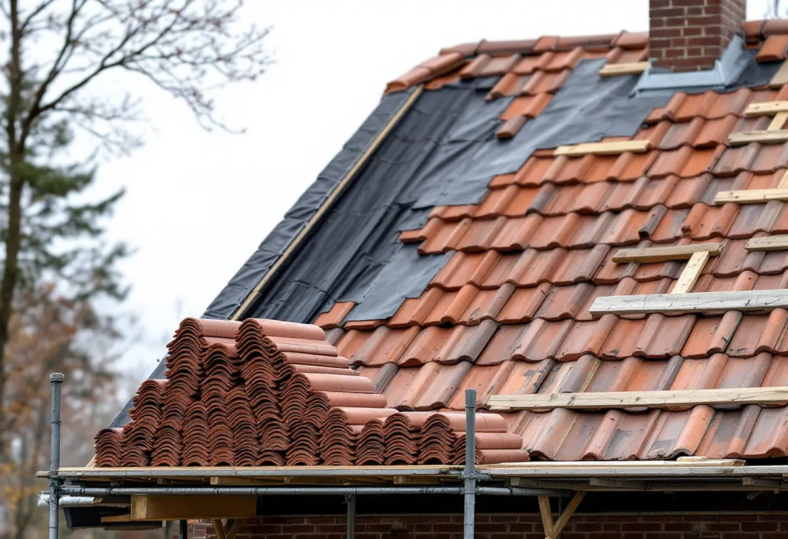

Platsbesök
Vi bedömer tak, underlag och plåt och noterar material, kulör och detaljer som ska bevaras.
I Djursholm och andra delar av Danderyd räknas det ursprungliga takmaterialet till det som ska bevaras, och hela kommunen ligger inom Försvarsmaktens påverkansområde för väderradar. Geal Entreprenad AB byter tak på villor och radhus i hela Danderyd, går igenom kommunens kulturmiljöunderlag innan materialet väljs och lämnar ett skriftligt kostnadsförslag efter ett gratis platsbesök.

Danderyds kulturmiljöhandbok har områdesblad för de utpekade miljöerna. För samtliga områden anges att stor vikt ska läggas vid att byggnadernas ursprungliga exteriör inte förändras genom byte av till exempel fasadmaterial, fönster, takmaterial eller färgtyp och kulör, och att underhållet sker varsamt med traditionella material och metoder.
Handboken lyfter också fram värdet av de ursprungliga materialen, som med sin ålder och patina berättar om byggnadernas historia, äldre hantverksskicklighet och byggnadsteknik. För ett takbyte betyder det att ett gammalt tegel- eller plåttak inte självklart ska ersättas med något annat, och att hela pannor kan vara värda att lägga tillbaka.
Kommunens riktlinjer från 2024 pekar åt samma håll. Där uppmanas fastighetsägaren att söka på sin adress i kulturmiljökartan för att se om fastigheten är utpekad och vilken arkitekturstil huset tillhör. Riktlinjerna påminner om att byggnader enligt plan- och bygglagen ska hållas i vårdat skick och underhållas så att utformning och tekniska egenskaper i huvudsak bevaras.

Bladet för Gamla Djursholm beskriver kvarteren Delling och Gamla Djursholm vid Stora Värtans strand, där några av Djursholms arkitekturhistoriskt mest intressanta villor ligger. De spänner i ålder från 1890 till 1960-tal: en stor brunmålad trävilla från 1890-talet, en medeltidsromantisk tegelvilla, en putsad klassicistisk villa från 1920-talet och en nästan brutalistisk betongvilla.
Området räknas som särskilt värdefullt och är riksintresse för kulturmiljövården. Husen har inventerats och delats in i tre klasser: omistlig, värdefull och intressant. För de omistliga ska förändringar göras med mycket stor hänsyn till byggnadens egenart, och tre fastigheter i kvarteret Delling har dessutom skyddsbestämmelser i detaljplanen.
Exemplet visar varför ett takbyte i Djursholm börjar med husets klass och planens bestämmelser. Fyra villor på samma strandväg kan behöva fyra helt olika tak. Takens epoker och renovering i kommunen beskrivs under takrenovering i Danderyd.
På sidan om de nya reglerna från 1 december 2025 svarar kommunen att fasadändringar som ommålning, nytt tak eller fönster inte kräver bygglov på en- och tvåbostadshus. Ändringarna ska ändå göras varsamt och anpassas till byggnadens värden. Lov krävs om fastigheten ligger inom ett kulturhistoriskt särskilt värdefullt område eller riksintresse för kulturmiljövården, eller om byggnaden själv är särskilt värdefull.
Boverket skiljer mellan underhåll och ändring. Att lägga samma material i samma utförande är underhåll, medan ett byte från tegeltak till plåttak är en fasadändring. Den som vill ha ett beslut på att åtgärden uppfyller lagens krav kan enligt kommunen söka ett frivilligt bygglov, även när lov inte krävs.
Grupphusen har egna riktlinjer. För grupphusbebyggelsen i Danderyd anges att områdenas enhetliga karaktär mot gatan ska bibehållas och att äldre material och byggnadsdetaljer ska värnas vid renovering och ombyggnad. Byter ett hus i gruppen till en annan panna eller kulör bryts den helheten.
Enligt kommunen ligger hela Danderyd inom Försvarsmaktens påverkansområde för väderradar. Därför krävs bygglov för solceller inom detaljplanerade områden, även när åtgärden annars skulle vara bygglovsbefriad. Kommunens solkarta visar hur mycket solinstrålning ett tak tar emot.
Planerar du solceller är takbytet rätt tillfälle att bestämma placering och infästning, och ansökan kan förberedas medan taket läggs. I en värdefull miljö spelar placeringen roll, eftersom panelerna påverkar husets uttryck mot gatan. Mer om paneler på villatak finns under solceller på taket.
Kommunen erbjuder kostnadsfri energi- och klimatrådgivning om solenergi. Skatteverket påminner om att samma solcellsinstallation inte kan ge både rotavdrag och skattereduktion för grön teknik, medan arbetet med själva taket ger rotavdrag enligt reglerna nedan.
Vi bedömer tak, underlag och plåt och noterar material, kulör och detaljer som ska bevaras.
Vi kontrollerar om fastigheten är utpekad och vad detaljplanen säger.
Samma material igen, eller ett annat material med bygglov om det krävs.
Rivning, underlag, pannor eller plåt, plåtdetaljer och ställning redovisas var för sig.
Det gamla taket tas ner, hela pannor sorteras ut och nytt underlag och ny läkt läggs.
Vi går igenom det färdiga taket och detaljerna tillsammans med dig.
Att byta och reparera takpannor, plåttak och hängrännor på ett småhus är rotarbete enligt Skatteverket, och det gäller även ställningsarbete och byggstädning i samband med arbetet. Avdraget är 30 procent av arbetskostnaden, högst 50 000 kr per person och år och högst 75 000 kr tillsammans med rutavdrag. Material, resor och bortforsling ger inget avdrag.
Du behöver äga villan när arbetet utförs och använda den som bostad. Avdraget görs direkt på fakturan.
Takets yta, lutning och form med torn, kupor och brutna takfall, om hela pannor ska läggas tillbaka, om ett traditionellt material krävs, hur mycket plåtarbete som ingår och hur ställningen kan stå på en kuperad tomt. En överblick finns i vad kostar ett takbyte. Efter platsbesöket får du ett skriftligt kostnadsförslag.
Byte av tegel-, betong- och plåttak.
Takbyte →Takbyte, takbesiktning och plåtarbeten.
Takläggare i Danderyd →Djursholm, Stocksund och Enebyberg.
Takrenovering i Danderyd →Villastäder, lovplikt och strandskydd.
Attefallshus i Danderyd →Tillbyggnad, tomt och kommunens riktlinjer.
Byggföretag i Danderyd →Kalkfärg på puts, linoljefärg på trä.
Fasadmålning i Danderyd →Villastäder, egnahem och grupphus i Danderyd.
Fasadrenovering i Danderyd →Lovplikt, klassning och spröjs i Danderyd.
Fönsterbyte i Danderyd →Varsamt underhåll av villafönster i Djursholm.
Fönsterrenovering i Danderyd →Originalgolv i villor från 1890-talet och framåt.
Golvläggare i Danderyd →Slipa parkett och mönstergolv i villan.
Golvslipning i Danderyd →Rännor, stuprör och beslag i Danderyd.
Plåtslagare i Danderyd →Villastäder, ritningar och ventilation.
Badrumsrenovering i Danderyd →Villastäder, egnahem och kommunens regler.
Köksrenovering i Danderyd →Villor, egnahem och grupphus i Danderyd.
Målare i Danderyd →Altaner, staket och carport.
Snickare i Danderyd →Tapet och papptak i äldre villor.
Tapetsering i Danderyd →Funkis, grupphus och 1950-talsvillor.
Tillbyggnad i Danderyd →Riva varsamt, bygga om helt.
Totalrenovering i Danderyd →